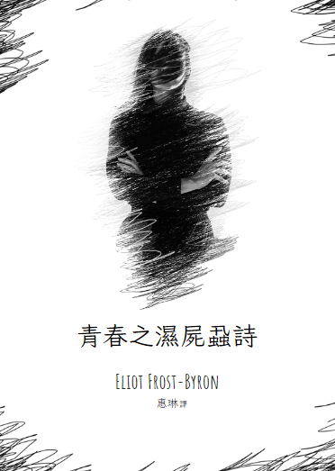

青春之濕屍蝨詩
作者：Eliot Frost-Byron
譯者：惠琳
出版社：松山出版社
出版時間：1989/11/31
語言：繁體中文
定價：559元
試閱
錦瑟無端五十絃，一絃一柱思華年
滄海月明珠有淚，藍田日暖玉生煙
莊生曉夢迷蝴蝶，望帝春心託杜鵑
此情可待成追憶，只是當時已惘然
註：你也曾有過那種年少，念舊、深情，曾以為能花一輩子的時間好好愛一個人，不惜翻山越嶺飄洋過海，不惜自己的青春成了誰的影子。 可惜事過境遷，風月流年，他終成為斷簡殘編裡的遺憾，你卻還在舊時光裡拾荒。道別是一輩子難解的課題，但每個人都必須、 也終究會適應形形色色的寂寞，愛和痛苦是一體兩面。儘管世事無常，但你的溫柔值得被善待，雨雪風霜的盡頭會是百花齊放。 也許你會抱怨經常錯過，但是親愛的，這也是我們學習如何愛人的過程，我們從愛人學習如何愛自己，悲傷恰好也是你用情至深的證明， 擁有和失去都是人生的習題。 況且，我們都心知肚明，有些裂痕是無法修補的，有些往事是不可挽回的，比如逐漸凋萎的玫瑰。所以我們窮極一生追尋所有永恆的可能， 於是我愛上月亮、潮汐，藉此安頓自己。
記著，你原本的樣子就閃閃發光。
萬物皆可雞湯，我只是不太會寫詩。